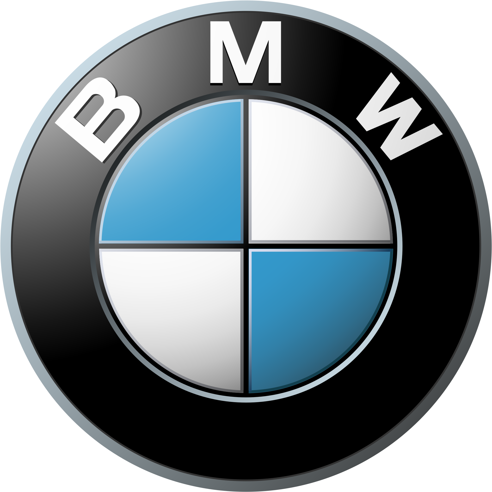

Mercedes-Benz (German pronunciation: [mɛɐ̯ˈtseːdəsˌbɛnts, -dɛs-] (listen)),[6][7] commonly referred to as Mercedes and sometimes as Benz, is a German luxury and commercial vehicle automotive brand established in 1926. Mercedes-Benz AG (a Mercedes-Benz Group subsidiary established in 2019) is headquartered in Stuttgart, Baden-Württemberg, Germany.
The history of the Porsche automobile brand began in 1948 with the Type 356, but the groundwork for the company was laid in the design office of Professor Ferdinand Porsche. The first order book in 1930 recorded the start-up phase of a legend in the making.
BMW was created in 1917 from the Munich firm Rapp-Motorenwerke. The company was incorporated into Knorr-Bremse AG in 1920 before being refounded as BMW AG in 1922. It was the successor of Bayerische Flugzeugwerke AG, founded in 1916. 1916 is therefore considered BMW's founding year.